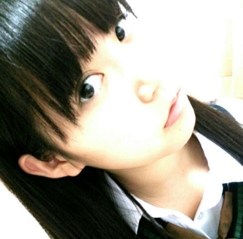
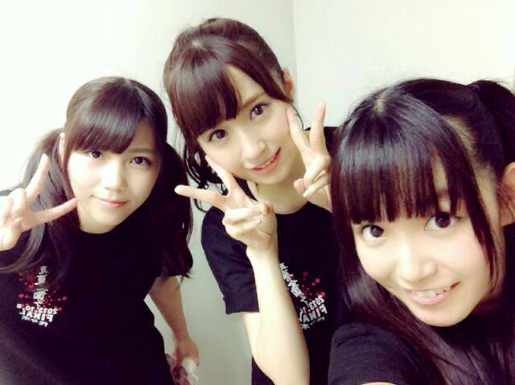
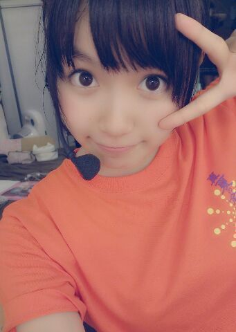
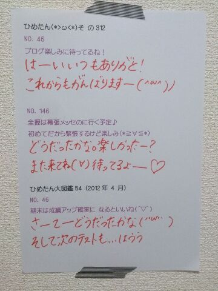
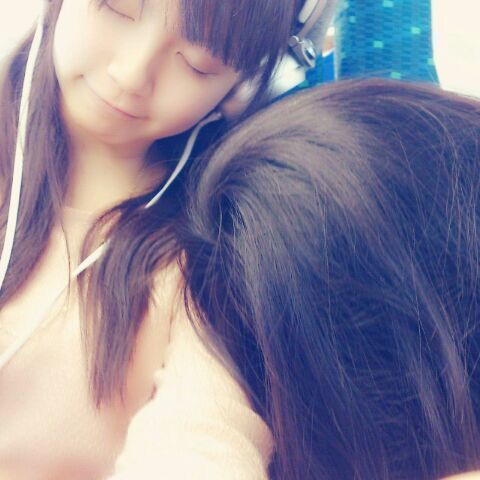
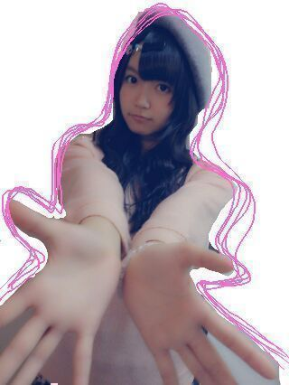
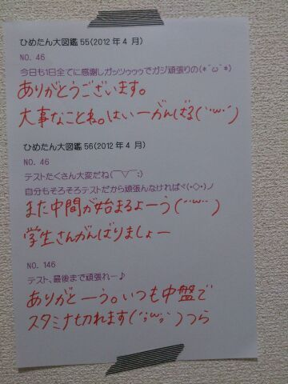

ライブのレポはまた次回......
今日は真面目モードですよー
そして長いっ！
いつものごとく
まとまんなくてとっちらかってしまったけど
よかったら最後まで読んでくださいな
さて 公式で発表がありました
中元日芽香、
7thシングル選抜メンバーに
選んでいただきました
まずはひめきゅんのみなさん
ここまで愛想尽かしたりせずに
長い間信じてついてきてくださって
疲れたと思います(´・ω・｀)
いいえ、ついてきてくれたというより
引っ張ってもらうばかりでした
本当に お待たせしました。
２年間ずーっとアンダーでやってきて
たくさん考えさせられて
たくさん腐ってきました
毎回 選抜発表のあとのブログは
正直何を書けばいいかわからなくて
握手会は励ましに来てくださったみなさんを
どんな顔で迎えればいいかもわからなくて
私は乃木坂46で必要な存在なんだろうかとか
学業との兼ね合いが上手くいかないなとか
２期生さんもみんなかわいいし......とか
悩みの種は尽きませんでした
いや、それは今もよく考えるかな(笑)
でも それでも前を向いて今日までやってこれたのは
信じて待っていてくださった
みなさんの存在があったからです
月並みな言葉しか見つからないけれど
いつもありがとうございます。
たまにしか番組でなかったり
ライブの出演楽曲も選抜より少ないけれど
ちゃーんとチェックしてくださって
ちゃーんと見つけてくださって
みなさんのその真摯な姿勢には本当に救われました
見てくださっている方がいらっしゃるんだなって
思うととっても嬉しかったし
前向きになれました(*^ω^*)
私は日の当たる立場を経験したことがないので
不安や戸惑い、プレッシャーは
発表されてから時間が経った今も
常に隣合わせです
でも 精一杯がんばらなきゃ
って気持ちの方が勝っていることは確かなので
心配はしないでくださいね！
選抜発表で名前を呼ばれたときは
まだふわふわしていてよくわからなかったのですが
家に帰って広島のぱぱに電話で報告した時
「おめでとう。よく頑張ったね。」って
ぱぱが涙声だとわかった途端
涙が止まりませんでした
上京するときに、嫌な顔ひとつせずに
中学校を卒業したばかりの私を
広島から笑顔で送り出してくれたぱぱ
今までありがとう。これからもがんばるからね。
私はアンダーとして過ごす時間が長いのですが
アンダーメンバーのみんなは常に
ハングリー精神とか向上心とか持ってて
時にはいろいろ考えちゃうこともあるけど
それでも励まし合って、支え合って
みんなでひとつのものを作るときの団結力は
本当に凄まじくて。
乃木坂はアンダーのパフォーマンスもいいなって
言ってもらいたいよね！ってことはいつも考えてて
でも個々でもみんなキラキラしてて
そして誰かが活躍したときに
みんなで喜ぶことができる
優しくて素晴らしい仲間たちです。
今回もアンダーから
４人が選抜メンバーに選ばれたのですが
みんな自分のことのように喜んでくれました
乃木どこを見てても ほっこりしちゃったな。
３人が選抜入ったこと
ひめたんもとっても嬉しかったよ！
あっそれから若月八福神も嬉しいっ
いつもストイックに頑張る若月
ほんとに尊敬してます。おめでとう！
選抜メンバーとして与えられたチャンスが
限られているってことはもちろん
ずっとアンダーメンバーとして過ごしてきただけに
そのチャンスの貴重さというか重みも
頭ではわかっているつもりです
今回選ばれたのも
実力とか、何か結果を残したんじゃなく
たまたま順番がまわってきただけだってことも
もちろん自覚しています
それでも、前みたいに
あまりマイナス思考にならないで
自分らしさを忘れずに
さらに高めて行けるよう一生懸命がんばります！
これからも引き続き
応援よろしくお願いします＼( ^O^ )／
「選抜入るまでは帰らない！」
そう宣言してずっと帰っていなかった
大好きな地元広島。
宣言したこと、めっちゃ後悔しました←
帰省するメンバーを
うらやましく思ったこともたくさんありました
でも、お仕事で辛いことがあっても
はやく帰ってやるって励みにもなりました
地元のみんなもお待たせしちゃったな......
お仕事と学校が落ち着いたら、すぐに帰ります！


中元 日芽香

いよいよ明日は代々木ライブ！
今まで経験したことないおっきなステージ、
真夏の全国ツアーの集大成......
ううーなんか緊張するよー
あっ東京はお天気がよくないかもしれないので
遠征組さんは気をつけてお越しくださいねー
いや関東組も気をつけてお越しくださいねー
ひめたんは晴れオンナよ！なぜ雨ふるのだ！
現地でのリハをして
距離感とかだいぶ掴んできた(｀・ω・´)」
サイズが今までと全然違うので
今日はただただ広さに圧倒されてた感じす
でもちゃーんとみなさんのこと見つけるからねー
そうそう！
質問でたくさんあったので
ちらっとまとめました＼(^O^)／
◎サイリウム→ピンクがすき
◎ひめたん単推し、イチ推しの方は
よかったらひめたんTシャツ着てみてねー
◎物販Tシャツもあるよー
とにかく動きやすさ重視の服装でねっ
◎うちわ、ひめたんタオルもよかったら......
◎代々木では上手・下手関係なく全方向行きます！
客席ももちろん広いと思うけど
そのなかでひめきゅんさんいっぱい見つけたいので
よかったらご協力くださーい∩^ω^∩
みんなで楽しいライブにしよーねっ
公式サイトに
今回のグッズとかも紹介されてたので
よかったらチェックしてみてくださいねー♪
乃木ここに
代々木ライブ直前！的な動画も上がってるので
ぜひチェックしてくださいねー♪
さらに真夏の全国ツアーではしなかった
また新しいことも......
楽しみになってきた？( ^ω^ )にや
質問返しどばばばーんっ

 ひめたんの好きな男の子の仕草って何？
ひめたんの好きな男の子の仕草って何？なんだろうねー
何かに一生懸命な人はかっこいーと思う///
 ひめたんは牛丼派？豚丼派？
ひめたんは牛丼派？豚丼派？
それともいくたどん派？笑うん迷わず親子丼派かな( ^ω^ )
.........いくたどん？そうだなーどうだろうなー( ^ω^ )
 こっちで広島風の
こっちで広島風の
美味しいお好み焼き屋見つけた？おうちで作ってしまうので
お好み焼きを食べに出かけることがないのよー
オタフクソースこっちじゃ見ないからな......
中二の男の子なんですけど
今日からひめたんのお友達になっても良いかな？おともだちかもーんぬ！
仲良くしてねよろしくね☆
わたしがかなーーーり前にプレゼントした
りぼんちゃん達はまだ捨てられてませんか！？(笑)ままは、みなさんからのプレゼントを
捨てるようなことはないから安心してー(*^ω^*)笑
大事につかってるよーありがとーう♪
広島に行ったときは、いつも
「むすび むさし」の「銀むすび」を食べます。
ひめたんは食べたことある？うは！うはうはー懐かしいー！
むさしさんのお弁当本当に大好きで
うはああー懐かしいーっ
前にお仕事で帰ったときのお弁当も
むさしさんのお弁当だったんだけどね
メンバーさんも大絶賛だったんだよー＼(^O^)／
密かに応援してます(笑)
堂々と応援した方が良かった？密かに応援してくださってるのも
もちろん嬉しいよ(*^ω^*)
堂々と応援してくださっても嬉しいので
気が向いたら......♪
 乃木坂の曲で
乃木坂の曲で
ダンスが難しい曲ってなんですか？なんだろなー
制服のマネキン、ガールズルールとか
あの辺かなーと思う。
難しい曲は踊ってて楽しい(^O^)
ひめたんは、岐阜県に来たことありますか？ないです......
岐阜いってみたい！ねねころ！
秋は中学の頃に合宿コンクールが
あったなーっ思う季節
ひめたんは何唄った？笑今年は、ロードオブメジャーさんの
「心絵」をうたいました。いい曲(〃ω〃)
ひめたんはちくわとちくわぶどっちが好きー？それが、ちくわぶと聞いてピンとこないのよ。
ちくわは好きってゆーかなんてゆーか
嫌いじゃないですよー
え？1stのPV？台っ本っ♪♪
 髪がショートな子は、
髪がショートな子は、
どうやってアレンジしたらいいと思う？りぼんは便利だよ◎
ひめたんはショートにしたことがないから
あんまし詳しくはないんだけど
生駒ちゃん(生駒里奈ちゃん)や
れなりん(市來玲奈ちゃん)の外ハネとか
かわいいと思う！
ひめたんは
学校の行事で何が一番好きだったー？？体育大会は好きだったなあー♪
あの、運動はできないのよ。できないんだけどね
個人の徒競走がない学校だったので
苦い思い出があんましないです
放送部さん実況とかもやってたんだよーう！
 ひめたんがかわいくてかわいくて
ひめたんがかわいくてかわいくて
かわいすぎて夜しか眠れないんですが！
どうしたらひめたんみたいに女の子らしく
かわいくなれますかいいことだ！とってもいいこと！
ひめたんも夜しか寝られないカラダに
なりたくてたまらんのだよ(´・ω・｀)
あ、ひめたんはかわいくないだよ←
でも嬉しいよーありがとうねー///
それでは明日いくよーて方は
代々木第一体育館でお会いしましょう！
お留守番ちーむはレポ待っててください！

(＊´・ω・＊)
最近の出来事
携帯の充電器が焦げました。
本体もちょっと焦げちゃったけど
本体の方は無事稼働してます
(｀・ω・´)/
いやー参ったよねー
お醤油ひっくりかえったとこ
ちょうどひめたん携帯充電しててさー
もうめーちゃーめーちゃ焦ったよね
修理出したら帰ってくるの時間かかるだろうし
そうなったらしばらくブログは書けんなーとか。
んだけどね
なんとか大丈夫だったみたい！
充電器は焦げちゃったので
ままのを借りてます
金属のとこからほのかにお醤油のかおりがします
そう、
ちま(樋口日奈ちゃん)の話には
続きがあったんです
あのあとねひめたん起きたの。
写め撮られてる気配を感じてね←
ほら、ひめたんって寝てるようで
寝てないようなもんだからさっ
そいで起きて、ちまが
「あはーごめんねー」ってなって
ひめたんはヘッドホンを装着し
ブログ開いてコメント読んでましたすると！
今度はちまが
眠りについたのよ。
彼女もテスト前でお疲れだったのねー
そいでしばらくしたら
ひめたんの肩にもたれかかる姿勢になったので
今だ！と思い
写め撮った(・∀・)にや

もーちょっと攻めこんで
写め撮ろうとしたら起きちゃったー
ちまお疲れさま( ^ω^ )
エア握手会場はこちらでーすよー

......あの、ねみなさん
いろいろ言いたいのはわかるんです
遠くね？とか なんて顔してんのよ？とか
いろいろ言いたいのはわかるんですが
違うんです違うんです諸事情があるんですっ
まず、顔が異常に遠いのは
こんな写めはじめて撮ったから
距離感がわからんのよ(´・ω・｀)う
そしてすーぱーおすまし顔なのは
撮影者
るんるん(斎藤ちはるちゃん)に
アゴ引くな！アゴ引くな！めーちゃんアゴ！
と言われてしまったために
アゴばっか意識してたら表情が......
はうう......
もちょい練習しますエア握手。
普段はもーちょいにこにこしてるんだよお

！
そして手はちっちゃいねって
よく言われます
とゆーか指が短いんかな。( ^ω^ )ははは←
エア握手 リクエストしてくれたみなさん
ありがとうございましたー♪
また今度やるときがあるなら
もちょーい上手に撮りまーすーがんばります

 初めてコメ二回しちゃったいいのかなぁ？？
初めてコメ二回しちゃったいいのかなぁ？？全然だーよーありがとー！
思い立ったらなんか呟いてってちょーだいっ
 アクションビームの顔文字って
アクションビームの顔文字って
どんなんですかね？(Г・ω・)Г あくしょん
カラオケ行くと
やっぱり乃木坂の歌を歌ったりする？ひとりのアーティストさんとして
乃木坂ちゃん好きだからねー
ぐるぐるカーテンとか歌いやすいよ♪
日芽香は
握手会ではどんな内容が楽しいかな？？
参考程度に教えてー（笑）ほんとに、おまかせよほんとに。
なんか聞きたいことがある方は
ちょっとおうちで考えていただけると
嬉しいでーす∩^ω^∩
ひめたんの眉毛が好きなんやけど、変かな？照れるなー///
あ、いや変とか思わないけどさ///
 さらさらストレートのひめたんを、
さらさらストレートのひめたんを、
ラインのトップ画にしてたら
友達からめっちゃかわいいって言われた
めっちゃ嬉しい！！ひめたんはどう思うー？？♪めっちゃ嬉しい！ありがとー(*^ω^*)
さらさらストレート好評なのー///
こないだコメントに書いた
体育競技会なんだけど赤組勝てたよ!
よかったらおめでとうって言ってー!報告まってたよ。赤組さんおめでとー！
体育競技会って響きかっこいーなー
ゆっくりやすんでね。お疲れさまっ＊
 トイプードル飼ってて、散髪行くんだけど、
トイプードル飼ってて、散髪行くんだけど、
どんなにしたらいいと思う？わんちゃんの髪はあんま詳しくないけど
たれミミわんちゃんのミミにりぼんつけて
あげたくなるっっ
私、おにゃのこひめきゅんなんだけど、
ひめたんびーむ浴びにいってもいい？
そして、私からもひめたんびーむしていい？///おにゃのこひめきゅんちゃん(∪^ω^∪)
いーねーびーむ合戦♪
楽しみにしてるよーう///
井上真央さんに似てるって言われたことない？はじめて言われましたー恐れ多いよおお
光栄すぎて。もう、どうしよう。
ありがとうございますっ( ω )
 ひめたんのズバリ推しメンはだれ？
ひめたんのズバリ推しメンはだれ？みんな好きって前提で
みなみ(星野みなみちゃん)
とまと(大和里菜ちゃん)
みりりん(渡辺みり愛ちゃん)
そう私はDDです。許してー(笑)
 ちょっと今学校の事でいろいろ悩んでいて‥
ちょっと今学校の事でいろいろ悩んでいて‥
ひめたんから応援メッセージを
いただきたいのです大丈夫かな。
困った時は誰かにお話を聞いてもらったら
スッキリするかもだよ？
ひめたんも最近
万理華(伊藤万理華ちゃん)に
話聞いてもらってスッキリしたよ。
学校のお友だちが難しかったら
ファミリーさんとか、幼なじみさんとか。
ひめたんでよければ話聞くよー！
万理華が
似顔絵描いてくれた紙が
なくなった......
また描いてもらうね(´;ω;｀)

(＊´・ω・＊)